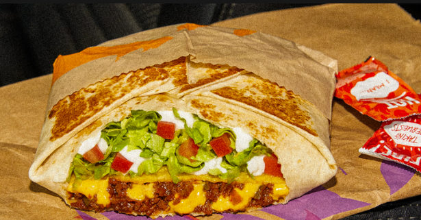

Crunchwrap Supreme
Origin: Taco Bell (Fake Mexican)
Source: Taco Bell Website
Category: Comfort Dish
Despite the noticeable price increase attributed to inflation, I'm an avid Taco Bell fan. There's an undeniable satisfaction in indulging in a Crunchwrap Supreme whenever hunger strikes. Fusing a traditional Mexican taco with a generously sized flattened burrito creates a symphony of flavors that resonates perfectly with my taste buds. The mere thought of it sets my stomach on a journey of anticipation, as each bite combines the comforting essence of familiar ingredients in a novel and exciting way. Yo quiero Taco Bell.
Recipe Ingredients
- Tortilla
- Ground Beef
- Circular Taco Shell
- Cheese
- Lettuce
- Sour Cream
- Melted Cheese
- Diced Tomatoes
- Taco Bell Seasoning
- Cheese Sauce
Recipe Steps
- Make the ground beef with taco seasoning, season it well with spices and Taco Bell spices from Target.
- Lay the tortilla on the grill and put cheese sauce on top of it, smooth it out in a circular motion, and be generous with the amount.
- Next, put the circular crunch taco shell on top of it while adding a generous amount of sour cream on it, don't be shy!
- Next add your seasoned to ground beef onto the tortilla.
- Finally, add your diced tomatoes, lettuce, and cheese.
- Wrap your Crunchwrap pentagon style and then grill it on a hot pan for about 4 minutes on medium heat, both sides.
- Take it off the pan and then cut it in half and you have your Crunchwrap supreme.
Additional Food Images
Double Chocolate Cookies
Origin: Michigan
Source: Family Recipe
Category: Dessert

My daughter learned to make these cookies at a baking camp at Zingermanns and has tweaked the recipe to fit the taste buds of her siblings. They are extremely sugary so the salt helps to balance it. Note, these cookies are best eaten very quickly.
Recipe Ingredients
- Unsalted butter
- Granulated Sugar
- Packed light or dark brown sugar
- Large egg
- Pure vanilla extract
- Semi-sweet chocolate chunks (melted)
- All-purpose flour
- Natural unsweetened cocoa powder
- Baking soda
- Salt
- Semi-sweet chocolate chunks
Recipe Steps
- In a mixing bowl cream together the butter, granulated sugar, and brown sugar.
- Add the egg and vanilla extract and beat well.
- Add the melted chocolate.
- In a separate bowl combine the flour, baking soda, cocoa powder and salt.
- Combine the wet and dry ingredients.
- Add the unmelted chocolate chunks.
- Form 15 cookies and place on a baking sheet.
- Cook for 12 to 13 minutes at 350 degrees.
Additional Food images


Dead Simple Fried Rice
Origin: American/East Asian
Source: Self
Category: Main Dish

This Dead Simple Fried Rice recipe is an incredibly modular and tasty dish. At its core, it's just rice, vegetables, protein, and oil. As such, the dish can be modified to serve as many or as few people as needed with a wide variety of food preferences. Experimentation with what specific ingredients you enjoy the most will unlock the full potential of this dish.
Recipe Ingredients
- Long-grain white rice
- Frozen Vegetables
- Eggs
- Milk (Optional)
- Oil of Choice
- Salt
- Soy Sauce
- Additional Sauce: Curry Sauce/Paste, Spicy Teriyaki Sauce, and Sweet Chili Sauce are great options (Optional)
- Additional Pre-cooked/Fast-cooking Protein of Choice: Nuts, sausage, tofu, and bacon are great options (Optional)
- Additional Fresh Vegetables: Green onions, celery, and vidalia onions add great texture and flavor to the dish (Optional)
Recipe Steps
- In a rice cooker, add half a cup of rice, a cup of water, a touch of oil, and a pinch of salt. Cook the rice. Tip: if there are tough frozen veggies, such as broccoli, you might want to add the frozen veggies to the integrated steamer basket.
- On high medium heat on your stovetop, in a frying pan, add your chosen oil. Add some milk if desired. Then, scramble the eggs.
- Before the eggs are fully done, add the frozen vegetables. Add fresh vegetables when required so they are fully cooked by the end.
- Add the additional protein when required so they are fully cooked by the end. (Optional)
- Once the rice is done, add it to the pan. Poor your desired amount of Soy Sauce. Stir well.
- After that, add your desired amount of additional sauce. Stir well. (Optional)
- Let the fried rice cook until it is no longer visibly oily and the dish is nice and hot, with the vegetables fully cooked.
- Plate the fried rice. Enjoy!
Additional Food images